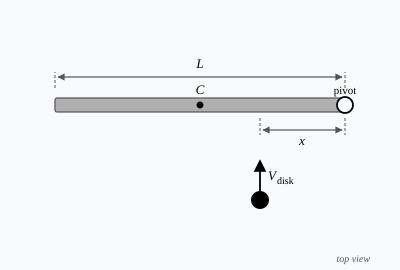

Rotational Dynamics
UNIT 7: Rotational Dynamics
Rotational dynamics is the study of how and why objects rotate. Every concept from linear motion — force, acceleration, momentum, energy — has a direct rotational counterpart. The math is nearly identical; only the variables change. Once you see the pattern, the entire unit clicks into place.
- Rotational Motion: an object spinning about an internal axis (Earth rotating every 24 hours).
- Translational Motion: the motion of a center of mass from one point to another (Earth orbiting the sun).
- A revolution (translational) differs from a rotation (rotational) — though they often occur together, like a rolling wheel.
Radians
All rotational quantities are measured in radians, not degrees. Need a refresher? Review Radians →
Rotational Motion Terms
The three core rotational quantities mirror their linear counterparts exactly — just replace position, velocity, and acceleration with their angular equivalents.
Angular Displacement (\(\Delta\theta\))
\( \Delta\theta = \theta_f - \theta_i \qquad \text{[rad]} \)
The change in angular position, measured in radians. Counterclockwise = positive, clockwise = negative — the same sign convention as linear displacement.
Angular Velocity (\(\omega\))
\( \omega = \dfrac{\Delta\theta}{\Delta t} \qquad \text{[rad/s]} \)
The rate of change of angular position. A higher \(\omega\) means more radians swept per second — a faster spin.
Angular Acceleration (\(\alpha\))
\( \alpha = \dfrac{\Delta\omega}{\Delta t} \qquad \text{[rad/s²]} \)
The rate of change of angular velocity. When you press the gas, the wheels have angular acceleration as they spin up. When you brake, \(\alpha\) is negative (slowing rotation).
Rotational and Translational Similarities
The equations for rotational and translational motion are structurally identical, and connected through the radius \(r\).
| Translational (Linear) | Connection | Rotational (Angular) |
|---|---|---|
| Displacement \(\Delta x\) | \(x = r\theta\) | Angular Displacement \(\Delta\theta\) |
| Velocity \(\displaystyle v = \frac{\Delta x}{\Delta t}\) | \(v = r\omega\) | Angular Velocity \(\displaystyle \omega = \frac{\Delta\theta}{\Delta t}\) |
| Acceleration \(\displaystyle a = \frac{\Delta v}{\Delta t}\) | \(a = r\alpha\) | Angular Acceleration \(\displaystyle \alpha = \frac{\Delta\omega}{\Delta t}\) |
Kinematic Equations
Replace \(x \to \theta\), \(v \to \omega\), \(a \to \alpha\) — every kinematic equation is structurally identical.
| Translational (Linear) | Rotational (Angular) |
|---|---|
| \( v = v_0 + at \) | \( \omega = \omega_0 + \alpha t \) |
| \( x = v_0 t + \tfrac{1}{2}at^2 \) | \( \theta = \omega_0 t + \tfrac{1}{2}\alpha t^2 \) |
| \( v^2 = v_0^2 + 2a\,\Delta x \) | \( \omega^2 = \omega_0^2 + 2\alpha\theta \) |
| \( x = \tfrac{1}{2}(v + v_0)t \) | \( \theta = \tfrac{1}{2}(\omega + \omega_0)t \) |
Torque
Torque (\(\tau\)) is the rotational equivalent of force — it is what causes angular acceleration. Three things determine how much torque a force produces:
- Force magnitude (\(F\)) — a larger force produces more torque.
- Distance from the pivot (\(r\)) — force applied farther from the pivot produces more torque.
- Angle between the force and the lever arm (\(\theta\)) — only the perpendicular component of the force contributes. Maximum torque occurs at \(\theta = 90°\).
\( \tau = rF\sin\theta \qquad \text{[N·m]} \)
Moment of Inertia
Just as mass resists linear acceleration, moment of inertia (\(I\)) resists angular acceleration. The critical difference: \(I\) depends not just on how much mass an object has, but on where that mass is located relative to the axis of rotation.
\( I = kmr^2 \qquad \text{[kg·m²]} \)
- \(k\) — shape constant given in the problem (depends on mass distribution)
- \(m\) — total mass [kg]
- \(r\) — distance from the rotation axis [m]
The value of K will change depending on the shape of the object, though you are not expected to memorize the k vlaues for certain shaped on the ap test.
Angular Acceleration and Torque
This is the rotational version of Newton's Second Law — the most important equation in this unit.
- Net force causes linear acceleration
- Mass resists the acceleration
- Net torque causes angular acceleration
- Moment of inertia resists rotation
Rotational Energy and Momentum
The same energy and momentum principles carry over directly — replace \(m \to I\) and \(v \to \omega\).
| Translational (Linear) | Rotational (Angular) |
|---|---|
| Kinetic Energy: \(\displaystyle KE = \tfrac{1}{2}mv^2\) | Rotational KE: \(\displaystyle KE_\text{rot} = \tfrac{1}{2}I\omega^2\) |
| Momentum: \( p = mv \) | Angular Momentum: \( L = I\omega \) |
| \(\Delta p = F_\text{net}\,\Delta t\) | \(\Delta L = \tau_\text{net}\,\Delta t\) |
Ice Skater Example
If you have ever wathced ice skating in action, you may have noticed that when the skater pulls their arms in close to their body, they spin faster. This is due to the conservation of angular momentum! When the skater stars spinning with their arms out, they have a angular momentum. Though, as they pull their arms in, they decreasen their moment of inertia because they are bringing their mass closer to the axis of rotation. Since angular momentum must be conserved ( \( L = I\omega \) ), the decrease in moment of inertia (\(I \downarrow\)) causes an increase in angular velocity (\( \omega \uparrow \)), making the skater spin faster!
Spinning bike Wheel Example
Imagine that a person is sitting on a rotating stool with a spinning bicycle wheel in their hands so it spins parallel to the ground counterclockwise. If they flip the wheel over, the stool will begin to rotate in the opposite direction that the wheel is spinning. This is because the initial angular momentum is posoitve as the wheel spings counterclockwise, but when it gets flipped, the wheel's angular momentum becomes negative. To conserve angular momentum, the person and stool must start spinning in the opposite direction to balance out the change in angular momentum from the wheel, causing them to spin counterclockwise. Check out this video to see it in action:
Rolling Without Slipping
When a ball or cylinder rolls across a surface without skidding, it is doing something remarkable: every point where the object touches the ground is instantaneously at rest. This constraint links the translational and rotational motion together:
\[ v_\text{cm} = \omega r \]
where \(v_\text{cm}\) is the speed of the center of mass, \(\omega\) is the angular velocity, and \(r\) is the radius. If this condition holds, the object rolls without slipping.
How Friction Makes It Spin
Imagine pushing a ball that is initially sliding across the floor with no spin at all. Kinetic friction acts at the contact point — but because it acts below the center of mass, it also exerts a torque about the center:
\[ \tau = f_k \cdot r \]
This torque spins the ball up. At the same time, the friction force decelerates the translational motion. The ball gradually spins faster and slows down translationally until \(v_\text{cm} = \omega r\) — at which point it rolls without slipping, friction drops to zero, and the ball moves at constant speed. Friction is the mechanism that transfers energy between translation and rotation.
Key insight: For a ball already rolling without slipping on a flat surface, static friction does no work — the contact point is not moving, so \(W = F \cdot d = 0\). It still exerts a torque, but it costs no energy. On an incline, static friction is what prevents slipping and enforces the rolling constraint; it does not act like a brake.
Energy of a Rolling Object
A rolling object has both translational and rotational kinetic energy at the same time:
\[ KE_\text{total} = \tfrac{1}{2}mv_\text{cm}^2 + \tfrac{1}{2}I\omega^2 \]
Substituting \(\omega = v_\text{cm}/r\):
\[ KE_\text{total} = \tfrac{1}{2}mv_\text{cm}^2\!\left(1 + \frac{I}{mr^2}\right) \]
The factor \(I/mr^2\) determines what fraction of the energy is rotational. A solid sphere (\(I = \tfrac{2}{5}mr^2\)) stores less energy in rotation than a hollow cylinder (\(I = mr^2\)), so the sphere accelerates faster down a ramp — even if both have the same mass and radius.
| Object | \(I/mr^2\) — Rotational fraction |
|---|---|
| Solid sphere | \(2/5 = 0.4\) |
| Solid cylinder / disk | \(1/2 = 0.5\) |
| Hollow sphere | \(2/3 \approx 0.67\) |
| Thin-walled hollow cylinder (hoop) | \(1 = 1.0\) |
Practice Problems
One elementary question per topic — check your understanding before tackling harder problems.
Angular Displacement
- A wheel rotates from \(\theta = 0\) to \(\theta = 3\pi\) rad. What is the angular displacement?
- \(\pi\) rad
- \(2\pi\) rad
- \(3\pi\) rad
- \(6\pi\) rad
- A disk completes 4 full rotations in 2 seconds. What is its angular velocity?
- 2 rad/s
- \(2\pi\) rad/s
- \(4\pi\) rad/s
- \(8\pi\) rad/s
- A spinning top's angular velocity increases from 0 to 10 rad/s in 5 seconds. What is its angular acceleration?
- 0.5 rad/s²
- 2 rad/s²
- 5 rad/s²
- 50 rad/s²
- A wheel starts from rest and has a constant angular acceleration of 2 rad/s². How fast is it spinning after 3 seconds?
- 2 rad/s
- 3 rad/s
- 6 rad/s
- 9 rad/s
- A force of 10 N is applied perpendicular to a wrench 0.5 m from the bolt. What is the torque?
- 0.5 N·m
- 2 N·m
- 5 N·m
- 20 N·m
- Two disks have the same mass. Disk A has its mass concentrated near the center. Disk B has its mass spread toward the rim. Which has the greater moment of inertia?
- Disk A
- Disk B
- They are equal
- Cannot be determined without the radius
- A disk with moment of inertia \(I = 2\ \text{kg·m}^2\) experiences a net torque of 6 N·m. What is its angular acceleration?
- 1 rad/s²
- 3 rad/s²
- 6 rad/s²
- 12 rad/s²
- A wheel with \(I = 4\ \text{kg·m}^2\) spins at \(\omega = 2\ \text{rad/s}\). What is its rotational kinetic energy?
- 4 J
- 8 J
- 16 J
- 32 J
- A skater spinning with arms out has \(I = 3\ \text{kg·m}^2\) and \(\omega = 2\ \text{rad/s}\). She pulls her arms in so that \(I\) drops to \(1\ \text{kg·m}^2\). What is her new angular velocity?
- 2 rad/s
- 4 rad/s
- 6 rad/s
- 9 rad/s
- Two ball are connected by a massless rod that is a length of 4d. The ball of the left has a mass of m, and the rigth has a mass of 1/2 m. What is the moment of intertia as te system is rotated about the point 1/4 D from the left ball?
- 5/4 m D²
- 3/2 m D²
- 11/2 m D²
- 2 m D²
- A horizontal disk is spinning about a firctionless axis with a moment of inertia. It is spinnign with a angular speed of \(\omega\). A second disk with half the moment of inertia of the first disk is dropped onto the first disk, and they stick together. What is the final angular speed of the system?
- \(\omega/3\)
- \(\omega/2\)
- \(2\omega/3\)
- \(\omega\)
- A carousel ride at the carnival with a radius r is initially at rest. I then begins to accelerate constantly until it has reached an angular velocity \(\omega\) after 2 complete revolutions. What is the angular acceleration of the carousel during this time?
- \( \frac{\omega^2}{4\pi} \)
- \( \frac{\omega^2}{2\pi r} \)
- \( \frac{\omega^2}{8\pi} \)
- \( \frac{\omega}{4\pi}\)
- A solid sphere (\(I = \tfrac{2}{5}mr^2\)) and a thin-walled hollow cylinder (\(I = mr^2\)) have the same mass and radius. Both start from rest and roll without slipping down the same inclined plane. Which statement correctly describes their motion at the bottom?
- They arrive simultaneously because they have the same mass and starting height.
- The hollow cylinder arrives first because a larger moment of inertia stores rotational energy more efficiently.
- The solid sphere arrives first because a smaller fraction of its energy is stored as rotational kinetic energy.
- The result cannot be determined without knowing the angle of the incline.
- A student sits at rest on a frictionless rotating stool, holding a spinning bicycle wheel whose axle points straight up. When viewed from above, the wheel spins counterclockwise with angular momentum \(L\). The student then flips the wheel so its axle points straight down. What happens to the student?
- The student remains stationary because flipping the wheel does not change its rotational speed.
- The student spins clockwise (viewed from above) with angular momentum \(L\).
- The student spins counterclockwise (viewed from above) with angular momentum \(2L\).
- The student spins counterclockwise (viewed from above) with angular momentum \(L\).
- A rigid bar with a mass m and length 3/4L is free to rotate about a frictionless hinge at a wall. The bar has amoment of inertia I = 1/4 ML2 about the hinge, and is released from rest when it is in a horizontal position
as shown. What is the instantaneous angular acceleration when the bar has swung down so that it makes an angle of 30° to the vertical?
- \(\frac{2g}{3L}\)
- \(\frac{g}{3L}\)
- \(\frac{3g}{4L}\)
- \(\frac{g}{L}\)
- A wheel spins with the angular velocity of \(\omega\). Which of ther following represents the period of a rotation?
- \(2\pi\omega\)
- \(\frac{1}{\omega}\)
- \(\frac{2\pi}{\omega}\)
- \(\frac{\omega}{2\pi}\)
- Torque is the rotational equivalent of which of the following linear quantities?
- Force
- Mass
- Acceleration
- Velocity
- Two disks have the same radius but different masses: disk 1 has mass m and disk 2 has mass 3m. What is the ratio of moment of inertia from disk 1 to disk 2?
- 1:3
- 3:1
- 1:9
- 9:1
- A wheel is placed on an axis free to rotate. It has rotational inertia of \(I\). The speed of the wheel in increased from 0 to \(\omega\) in t amount of seconds. What is the average torque during the time inerval t ?
- \(\frac{I\omega}{t}\)
- \(\frac{I}{t}\)
- \(\frac{\omega}{t}\)
- \(\frac{I\omega}{2t}\)
-
Wheel and Hanging Mass
A wheel of mass \(M\), radius \(R\), and moment of inertia \(I\) is mounted onto a frictionless axis on a wall. A wire is wrapped around the wheel several times, with a mass \(m\) hanging from the free end. The mass is released from rest and accelerates toward the ground.
(a) What is the tension in the wire as the mass accelerates toward the ground?
(b) What is the angular acceleration of the wheel as the mass accelerates toward the ground?
(c) What is the angular velocity of the wheel after it has rotated two full revolutions?
(d) What is the angular momentum of the wheel after it has rotated two full revolutions?
-
Cylinder Rolling Down an Incline
A solid cylinder of mass \(m\) and radius \(r\) is released from rest at the top of an incline of angle \(\theta\) and length \(L\). The cylinder rolls without slipping and has moment of inertia \(I = \tfrac{1}{2}mr^2\).
(a) Draw the free-body diagram for the cylinder as it rolls down the incline. Label all forces and the point of application of each.
(b) Derive the linear acceleration of the cylinder's center of mass down the ramp in terms of \(g\) and \(\theta\).
(c) what is the smallest coefficient of friction that will prevent the cylinder from sliding?
The cylinder then rolls along the horizontal floor at the bottom of the incline without slipping and encounters a second ramp at the same angle \(\theta\). The second ramp has a coefficient of firction that is less than the what you previously calculated in the last question.
(d) Is the max heigth the ball reiched on the second ramp more, less, or equal to the heigth it initially started at on the first ramp?
(e) Is the magnitude of the angular accleration on the second ramp more, less, or equal to the magnitude on the first ramp?
-
Disk and rod Collision

A rod of length \(L\) and mass \(m\) has the rigth side of it connected to a frictionless pivot on a flat frictionless horizontal surface. The Center of the rod is represented as point \(C\). The rod is initially as rest and is free to move around the pivot. A student will slide a disk of mass \(m_{disk}\) perpendicular to the rod at a speed of \(v_{disk}\) where is will stick a distanct of \(x\) away from the pivot). The students goal is to have to rod-disk system to end up having the most angular momentum possible.
(a) To give the rod as much angular speed as possible, where should the student aim the disk?
_____ At \(C\) _____ The left of \(C\) _____ The right of \(C\)Explain your reasoning briefly without using equations.(b) Before the collision, the disk has a rotational inertia about the pivot of \(m_{disk}x^2\) and has a angular momentum of \(m_{disk} v_{disk} x\). Derive and equation that represents the angular speed of the rod after the collision. Use \(L , m_{disk}, v_{disk}, x\).
(c) Using the equation from part (b), determine how the angular speed of the rod would be different is the disk instead bounced off of the rod rather than sticking.
Angular Velocity
Angular Acceleration
Rotational Kinematics
Torque
Moment of Inertia
Rotational Newton's 2nd Law
Rotational Kinetic Energy
Conservation of Angular Momentum
Free Response
These questions are in the style of AP Physics 1 free-response problems. Show all work, define any variables you introduce, and justify your reasoning in complete sentences where asked.